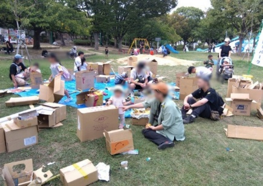

トントン相撲大会
大きな土俵でみんなで楽しむ、大迫力のトントン相撲！
子育て環境づくり社会実験
近鉄郡山駅前官民複合施設内に計画中の子育て世代活動支援センターの整備にあたって、設置する遊具や運営方法等を検討するための実証実験です。
会場内には、最先端でユニークな遊具やおもちゃ、おはなし会にトントン相撲等、いろんな【あそび】が大集合！親子で一緒にぜひご来場ください！

大きな土俵でみんなで楽しむ、大迫力のトントン相撲！

地域の人に教えてもらいながら、物語や昔ながらのあそびにふれます。

最先端でユニークな遊具やおもちゃが大集合！親子でのびのびあそべます。

段ボールや身近な素材を使って、親子で自由につくってあそびます。

本格的なおみせで、ごっこあそびを思いきり楽しもう！

障がいの有無にかかわらず、みんなで一緒に楽しめる体験。

つくる楽しさと、できあがったものであそぶ楽しさを味わえます。

会場みんなで少しずつ作品を増やしていく、参加型のあそびです。
読み聞かせや昔あそびなど、世代をこえて楽しむ時間
作品が少しずつ増えていく、会場みんなで育てるあそび
からだを動かすあそびで、自然に笑顔が生まれます
休憩しながら見守れる、広場のような屋内空間をめざします
たっぷりあそんだあとに、感じたことを少しだけ聞かせてください。
親子の何気ない声が、よりよいあそび場づくりにつながります。
入場料
みんなで未来の子育て環境を考えよう
三の丸会館（市立体育館）